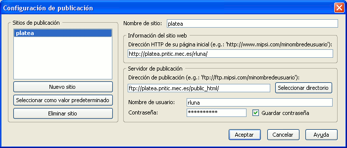
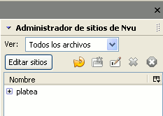
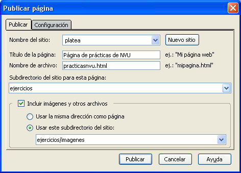

Publicación>>gestor NVU

Explicar el acceso vía FTP a un servidor puede ser una tarea un tanto compleja si no recurrimos a un ejemplo concreto. Es por ello por lo que voy a utilizar unos datos para definir a un usuario hipotético de forma que contemos con ellos como referencia y puedas hacer un paralelismo con tu situación real.
Como ya comentamos en la introducción vamos a utilizar como modelo el servicio ofrecido por el CNICE que puede presentar características similares a las de muchos proveedores. Si tu proveedor de acceso es diferente podrás tomarlo como referencia pero tendrás que consultar la documentación sobre disponibilidad e instrucciones específicas de acceso en tu caso.
Tomemos pues los datos del usuario cuya dirección de correo es rluna@platea.pntic.mec.es que, por lo que hemos visto hasta el momento, tendrá como nombre de usuario para el servicio de correo lo que aparece antes del signo @, esto es, rluna. En la mayoría de los servidores también será este el nombre de usuario para acceder al servicio de ftp, y así ocurre en el caso del CNICE. Si el nombre de usuario es el mismo que para el correo electrónico es lógico suponer que la contraseña será también la misma y así ocurre también en este caso.
En algunos casos el nombre de usuario no es sólo lo que precede al signo @ sino que puede ser toda la dirección de correo electrónico u otro dato que te habrá suministrado tu proveedor.
En cuanto al nombre del ordenador en el que tenemos reservado el espacio, en el caso de las cuentas del CNICE coincide con el ordenador en el que se almacena nuestro correo, por lo que en el ejemplo que estamos viendo sería platea.pntic.mec.es, aunque hay que tener en cuenta que este caso no es tan general como en lo referido al nombre de usuario y la contraseña: hay muchos servidores en los que el espacio de almacenamiento está alojado en un servidor con un nombre diferente al del correo.
Veamos pues un resumen de un par de situaciones que pueden cubrir una gran parte de la casuística.
|
e-mail
|
usuario
|
contraseña
|
ordenador remoto
|
|---|---|---|---|
| rluna@platea.pntic.mec.es | lo que precede a @ = rluna | la misma del correo | el mismo del correo = platea.pntic.mec.es |
| mercedesgr@ya.com | todo el e-mail = mercedesgr@ya.com | la misma del correo | diferente al de correo = ftp.ya.com |
Una vez conocidos estos datos podremos empezar a trabajar con el administrador de sitios de N|VU.
Se denomina administrador de sitios a una herramienta capaz de gestionar la transferencia de archivos entre un sitio local y uno remoto, con la particularidad de poder sincronizar ambos sitios, de forma que no sea necesario manejar los archivos individualmente, sino que se puedan comparar las fechas y actualizar todo el sitio en una sola operación. En este sentido convendría señalar es que el gestor de sitios de N|VU es un componente del programa al que aún le queda bastante para convertirse en un verdadero gestor de sitios, puesto que solo sería funcional para sitios muy sencillos. Así pues, podríamos considerar que es poco más que un gestor de ftp con alguna particularidad en cuanto a la posibilidad de enviar las imágenes junto con la página.
Lo primero que vamos a hacer es configurar una conexión para poder establecer un sitio de publicación. Para ello lo mejor es que veas el vídeo explicativo.

La imagen anterior muestra un resumen del proceso de
creación
de un sitio remoto. Accedemos al mismo mediante la opción de
menú editar  configuración
de
publicación tras lo que se abre el panel en el
que:
configuración
de
publicación tras lo que se abre el panel en el
que:
Si hemos dejado sin guardar la contraseña el programa seguirá presentando el mensaje de error hasta que no lo reiniciemos aunque lo corrijamos en la configuración de publicación y la guardemos.
Cuando hemos completado el proceso previo veremos aparecer nuestro sitio en la zona reservada al administrador de sitios en la parte izquierda de la pantalla. Como lo habitual es que tengamos esta zona oculta basta con pulsar la tecla para que se pueda visualizar.
Un doble clic sobre el nombre del sitio iniciará la conexión y nos mostrará el contenido del sitio remoto, activando los iconos de su propia barra de herramientas que nos permitirán actualizar la vista, crear una carpeta, renombrar un archivo, borrarlo o parar la acción que se esté realizando respectivamente.
Crea un sitio utilizando los datos que te haya suministrado tu proveedor
Conéctate al sitio y crea una carpeta llamada ejercicios

Como puedes comprobar en la imagen precedente, cuando pulsamos
el icono  aparece un panel en el que podemos especificar varios datos:
aparece un panel en el que podemos especificar varios datos:
y elige en primer lugar
la publicación de la página sin incluir las
imágenes.Una vez que una página se ha
publicado el
botón de publicación queda inactivo hasta que no
se realice alguna modificación en la página.
Puedes optar por introducir un espacio y borrarlo o bien por utilizar
la opción de .
Usando cualquiera de los dos métodos que acabamos de indicar vuelve a publicar la página pero incluyendo las imágenes dentro del subdirectorio imagenes. Como ese subdirectorio está dentro del que hemos llamado ejercicios hay que indicarlo tal como aparecía en la imagen que encabeza este epígrafe.
Carga la página en el navegador y comprueba que la página se ve ahora correctamente.
En ocasiones, el administrador de sitios nos confunde porque duplica el nombre de los archivos, así que vamos a utilizar el icono para actualizar el listado y que no haya dudas.
Como has podido comprobar la funcionalidad de publicar una página con sus imágenes asociadas es bastante interesante, ya que nos garantiza que todos los archivos que componen la misma se enviarán al servidor.
A pesar de ello, aún superando a los programas de ftp puros, todavía quedan algunas cuestiones que mejorar en este componente como, por ejemplo:
Conéctate a tu espacio web.